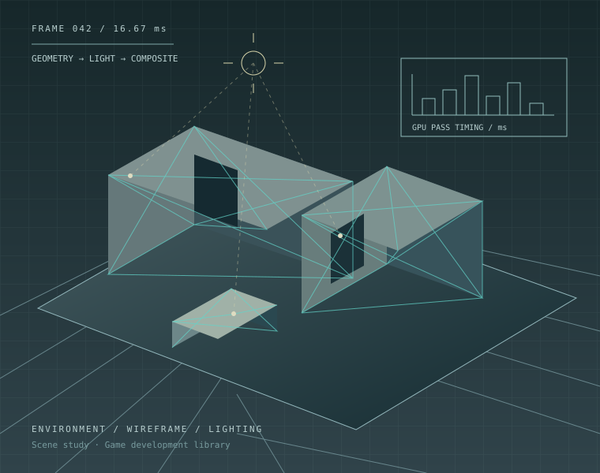

GAME SCENES / TECHNICAL KNOWLEDGE
Game Development
Knowledge Portal
描画の仕組みから、ゲームをつくる現場まで。
技術資料を開き、テーマの読み順をたどる。
キーワードで技術を探す。/ キーで検索欄へ。

FEATURED DOCUMENTS
資料から、技術に出会う
講演スライドや技術資料を、実際のページプレビューから。
資料を読み込み中…
READING PATHS
テーマを、順番に理解する
基礎・実装・採用事例をつなぐ、テーマごとの読み順。
読み順を読み込み中…
TREND / DISCOVERY
今日の技術トレンド →
Unity・Unreal・Graphics / Shader・DCC。直近の技術記事から、次に調べたいテーマを見つける。
3日限定のDiscovery Feed · 正式なライブラリへの登録は個別に判断